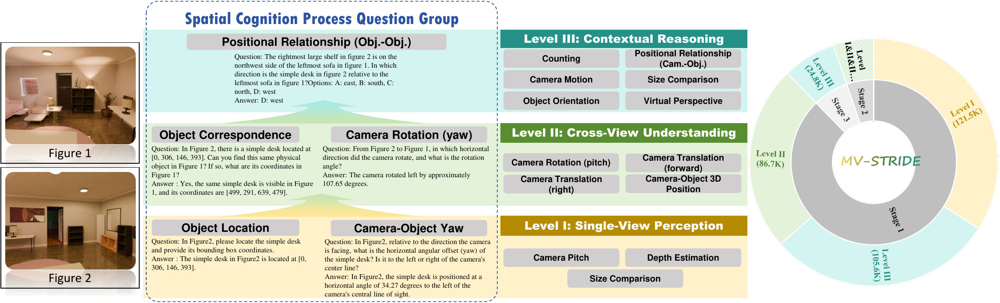
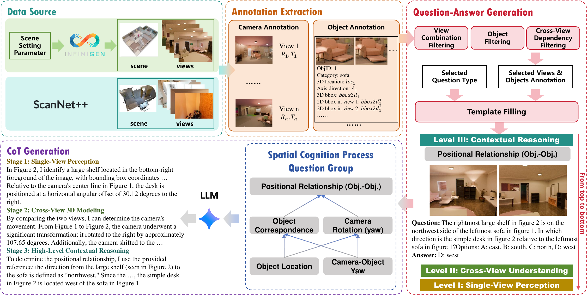

Overview of MV-STRIDE. Replace assets/teaser.png with your actual teaser figure.
Abstract
Despite the rapid progress of Multimodal Large Language Models (MLLMs) in 2D vision-language tasks, robust multi-view spatial reasoning remains a fundamental bottleneck. We introduce MV-STRIDE, a hierarchical multi-view spatial reasoning dataset with interdependent and decomposed capabilities. MV-STRIDE organizes spatial reasoning into single-view perception, cross-view understanding, and high-level contextual reasoning, providing a structured learning pathway for MLLMs. Extensive experiments demonstrate that training with MV-STRIDE substantially improves spatial reasoning performance across multiple benchmarks.
Highlights
Hierarchical Capability Modeling
We decompose multi-view spatial reasoning into three levels, from single-view perception to cross-view scene understanding and high-level contextual reasoning.
Cross-View Dependency
Level III questions are designed to require integration across multiple views, reducing single-view shortcuts and encouraging 3D-consistent reasoning.
Scalable QA Generation
MV-STRIDE uses 3D-grounded scene annotations to generate large-scale, structured, and verifiable multi-view spatial reasoning data.
Strong Benchmark Performance
Models trained with MV-STRIDE achieve consistent improvements on multiple spatial reasoning benchmarks.
Method Overview
MV-STRIDE follows a cognition-driven construction pipeline. We first extract camera and object annotations from 3D scene assets, then apply view and object filtering to ensure valid spatial reasoning tasks. Based on these annotations, we generate hierarchical QA pairs and construct long-chain reasoning supervision for high-level multi-view tasks.

MV-STRIDE construction pipeline. Replace assets/pipeline.png with your actual method figure.
Results
MV-STRIDE improves spatial reasoning performance across multiple benchmarks. The table below is a placeholder; replace it with your final numbers.
| Model | MMSI-Bench | CV-Bench | ViewSpatial | 3DSRBench |
|---|---|---|---|---|
| Base Model | 29.20 | 84.31 | 40.51 | 59.98 |
| MV-STRIDE | 38.90 | 86.73 | 48.35 | 64.51 |
Dataset
The dataset, annotations, and generation scripts will be released here.
Replace this section with the final release information, license, download link, and usage instructions.
BibTeX
@inproceedings{xu2026mvstride,
title = {MV-STRIDE: Enabling MLLMs to Master Multi-View Spatial Reasoning via Hierarchical Capability Modeling},
author = {Xu, Jin and Huang, Xiang and Zhang, Zhihong and Li, Zhuodong and Chen, Xuejin and Zhao, Jie and Liu, Xiaowei and Wang, Xinzhi and Wei, Jiansheng},
booktitle = {European Conference on Computer Vision},
year = {2026}
}Contact
For questions, please contact: your_email@example.com